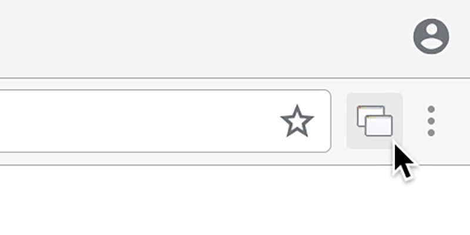
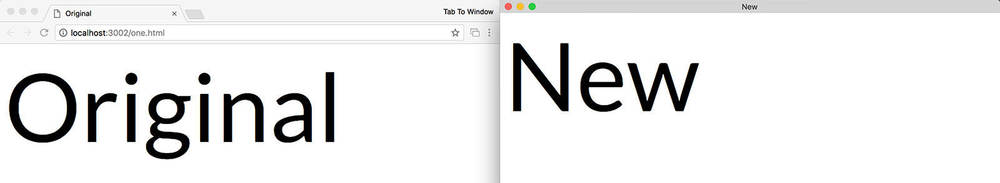
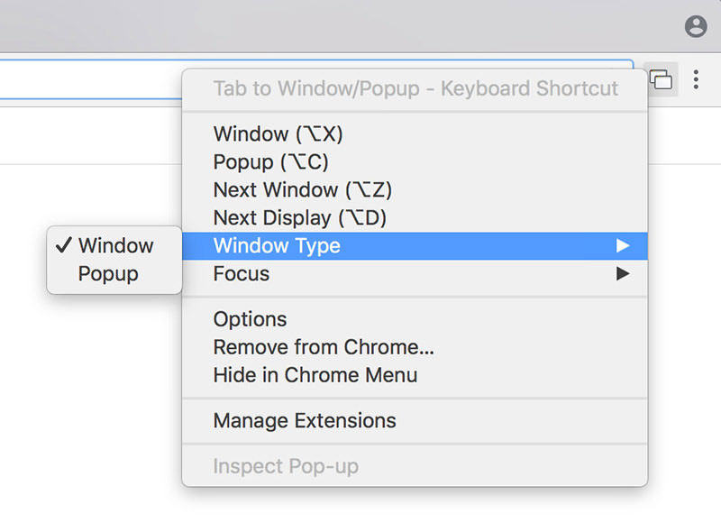
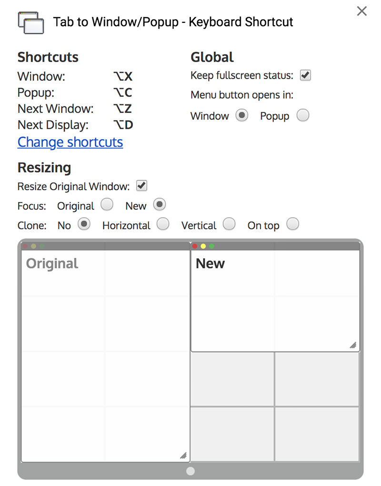

Author

Dragging is a drag, move your tabs to a new window in an instant!
Tabs can be moved to a new window with either a key command:
Or by clicking the extension button:
New windows can also be a Popup window (no UI).
This can be done with a key command:
Or by changing the Window Type for the button (right click):
Tabs can also be moved between windows with the Tab to Next Window command.
You can move multiple tabs by selecting them first (by holding shift or command/control).
The window arrangement and other settings can be customised in the options page.
Multiple displays are supported! Windows are split on their current display.
A tab can be moved to a new window on the next display with the Tab to Next Display command.
The key commands can be customised by following the link on the options page.
The defaults are: